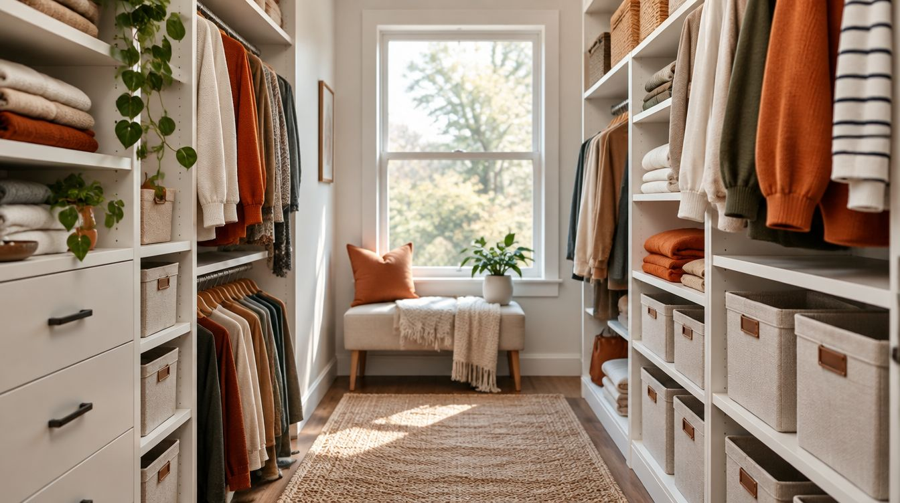
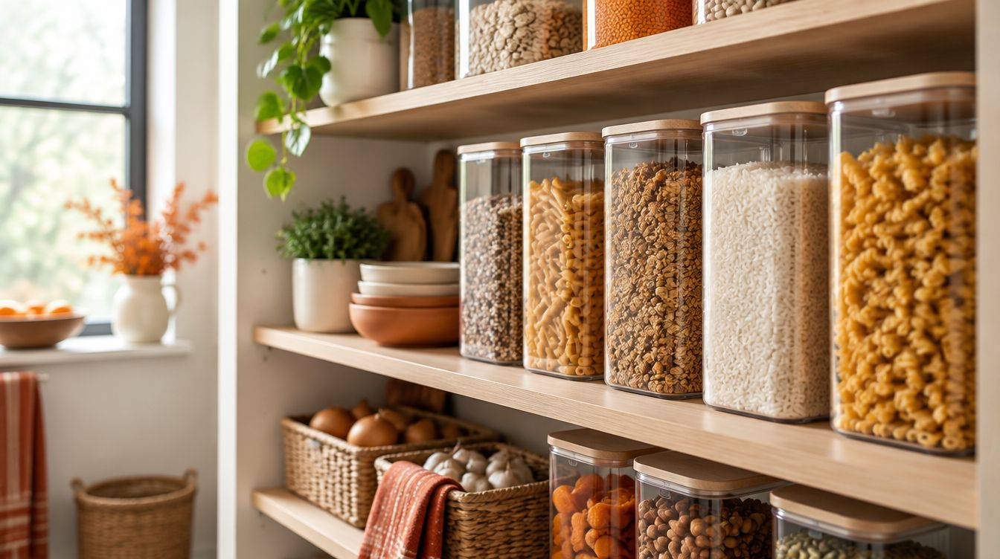
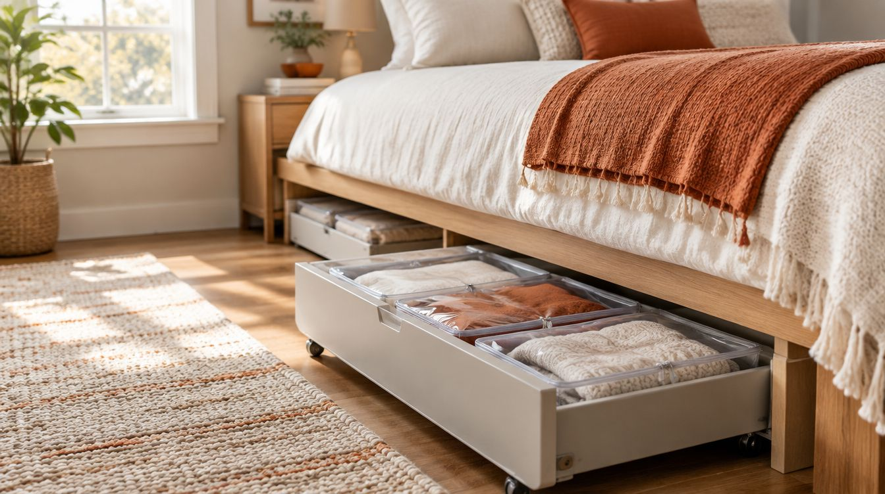
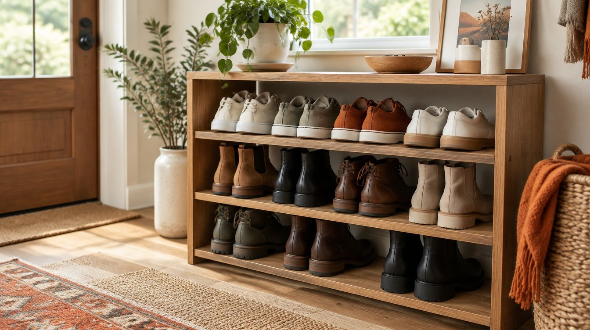
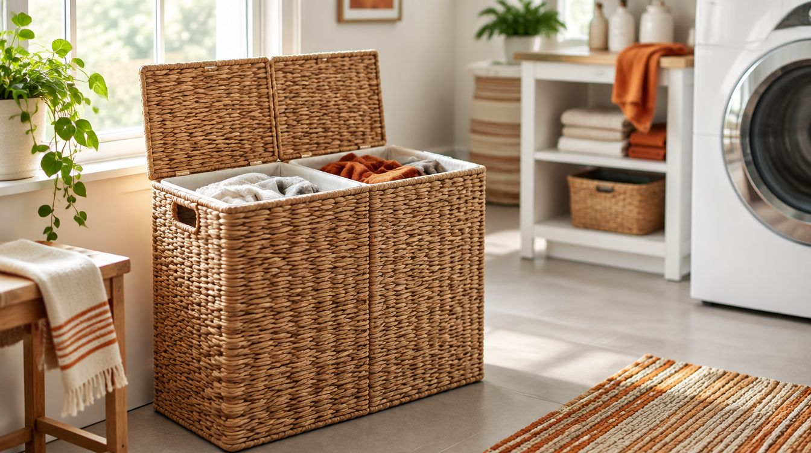
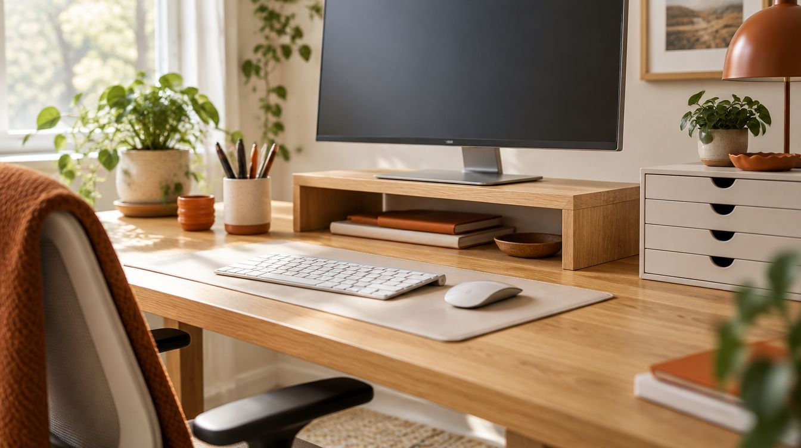
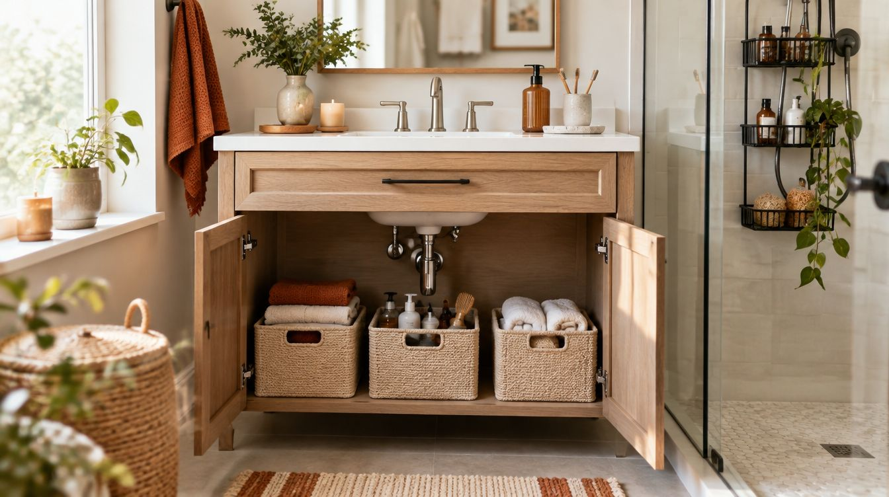
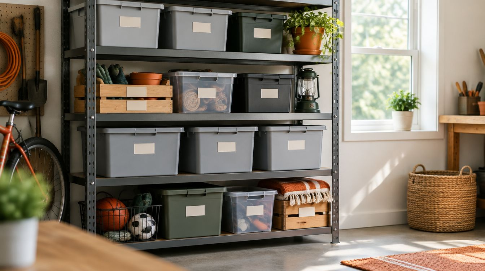
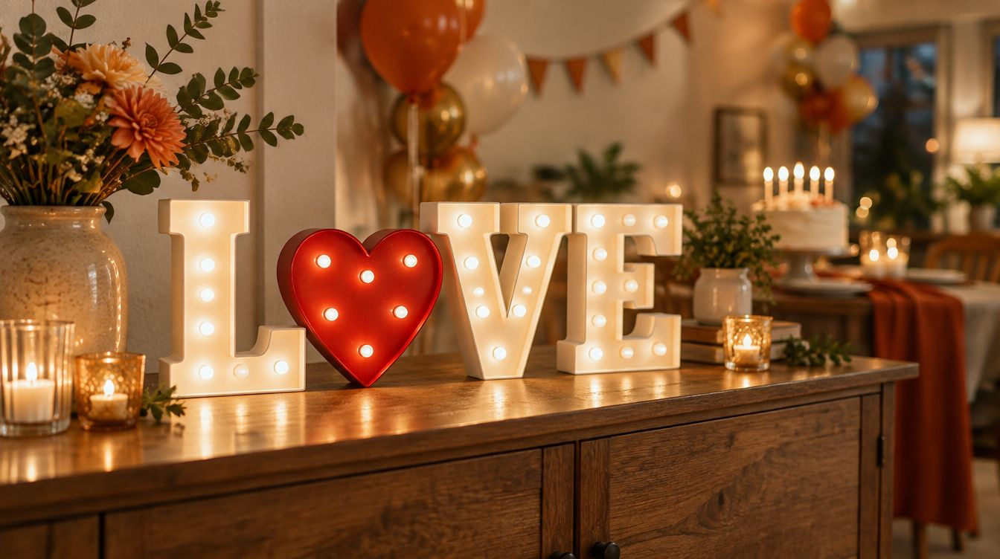

Best Closet Organizers: How to Fit More in Less Space
How to choose closet organizers: measuring, closet systems, hanging shelves, drawers, and renter-friendly options.
Declutter with storage that actually fits your space.

How to choose closet organizers: measuring, closet systems, hanging shelves, drawers, and renter-friendly options.

How to organize a pantry: airtight containers, shelf risers, lazy Susans, labels, and first-in-first-out rotation.

How to choose under-bed storage: measuring clearance, rolling drawers vs bins, and what to store there.

How to choose a shoe rack: stackable, bench, over-door, wall-mounted, and closed cabinet styles, plus sizing tips.

Laundry hamper buying guide: capacity, sorting, rolling and collapsible styles, ventilation, and materials.

Desk organizer buying guide: trays, drawers, monitor stands, cable management, and layout tips.

Bathroom organizer buying guide: under-sink bins, shower caddies, over-toilet shelves, and moisture-resistant materials.

Storage shelving buying guide: wire, steel, plastic, and wood shelves, weight capacity, anchoring, and layout tips.

Toy storage buying guide: open bins, shelves, toy chests, safety tips, and ways to keep toys organized.

What to know about the ADORNEVE full-over-full bunk bed with desk, drawers, charging station and LED lights: size, safety, setup and who it suits.

Battery-powered LED marquee letters for birthdays, weddings and holiday decor: size, power, how many to buy, and tips for a sign that looks good.